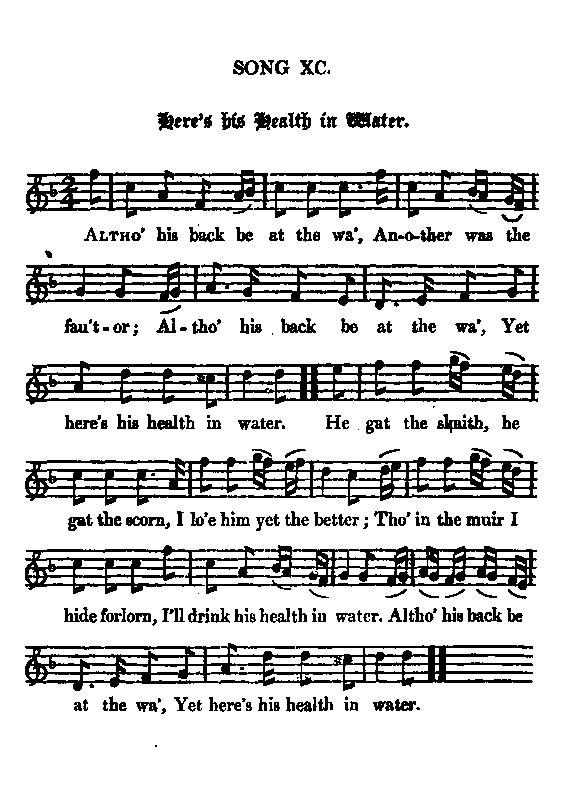

Here's a Health in Water
Le toast à l'eau
A curious Bacchanalian song
Tune - Mélodie"Here's a health in water" (Hogg - "Jacobite Relics, 2nd Volume", N°90, 1821)
Variant 1
"Job of journeywork" (Joyce – "Ancient Irish Music", 1890)
Variant 2
"My wife has ta'en the gee" (Gow – "Fifth Collection of Strathspey Reels", 1809)
Tunes sequenced by Christian Souchon

|
To the tune:
The first printed appearance of the tune, under the title "Job of Journeywork" seems to be in James Aird’s Selection of Scotch, English, Irish and Foreign Airs , vol. 3, N°401 (Glasgow, c. 1796). It is perhaps based on an older air called “My Wife She’s ta’en the Gee.” Robert Burns used the tune for one of his songs appearing in the Scots Musical Museum (vol. V, Edinburgh, 1796, No. 490), entitled “Here’s His Health in Water .” (See below). The melody is called “Stone Grinds All” in Connecticut fifer Giles Gibb’s (1760-1780) music manuscript book. The second movement of an Irish melody, "The little red Fox" which may be found in Stanford's "Irish Melodies", N°6, 1894, has a remakable likeness to the swing of the "Job of Journey Work". Furthermore, in Irish tradition, “Job of Journeywork” is one of the four tunes called the "Traditional Sets" (i.e. set dances), along with “St. Patrick’s Day ", “The Blackbird” and “Garden of Daisies.” Sources: "The Fiddler's Companion" and "Complete Songs of Robert Burns" (cf. Links). |
A propos de la mélodie:
Cette mélodie fut d'abord publiée, sous le titre "Travail de Compagnon" , chez James Aird, dans sa "Sélection d'airs écossais, anglais, irlandais et étrangers", vol.3, N°401 (Glasgow, vers 1796). Elle est peut-être dérivée d'un air plus ancien intitulé "Ma femme a pris le mors aux dents" . Robert Burns a utilisé la mélodie pour l'une de ses chansons publiées dans le "Musée musical écossais" (vol. V, Edimbourg, 1796, N°490, intitulé "Le toast à l'eau" . (Cf. infra). La mélodie porte le nom de "La meule à tout faire" dans le carnet de musique manuscrite du fifre du Connecticut Giles Gibb (1760-1780). Le second mouvement d'une mélodie irlandaise "Le petit renard roux" qu'on trouvera dans les "Mélodies Irlandaises" de Stanford (N°6, 1894) a un rythme qui ressemble fort à celui de "Travail de compagon". Par ailleurs, dans la tradition irlandaise, "Travail de compagnon" est l'une des 4 mélodies visées par l'expression les "Set danses traditionnelles", avec "La Saint-Patrick" , le "Merle" et le "Jardin aux pâquerettes". Sources: "The Fiddler's Companion" et "Collection complète des chansons de Burns" (cf. Liens). |

|
HERE'S A HEALTH IN WATER
1. Altho' his back be at the wa', Another was the fau'tor; Altho' his back be at the wa', Yet here's his health in water. He gat the skaith, he gat the scorn, I lo'e him yet the better; Tho' in the muir I hide forlorn, I'll drink his health in water. Altho' his back be at the wa', Yet here's his health in water. 2. I'll maybe live to see the day That hunds shall get the halter, And drink his health in "usquebae", As I do now in water. I yet may stand as I hae stood, Wi' him through rout and slaughter, And bathe my hands in scoundrel blood, As I do now in water. Although his back be at the wa', Yet here's his health in water. Source: "The Jacobite Relics of Scotland, being the Songs, Airs and Legends of the Adherents to the House of Stuart" collected by James Hogg, volume 2 published in Edinburgh by William Blackwood in 1821. |
LE TOAST A L'EAU
1. Si donc il est au mur acculé, D'autres que lui déméritèrent. Aussi vais-je boire à sa santé, L'eau que contient ce verre. Malheur et mépris: voilà donc son lot, Et moi, pourtant, je le vénère. Si, dans ma cachette, je n'ai que de l'eau; A sa santé je bois quand même Oh, oui même si le vois au mur acculé, Mon toast je réitère! 2. Puissè-je vivre le jour béni Où ces chiens pendront à la corde, Pour que je boive enfin du whisky Que le verre déborde. Pour combattre je rejoindrai ses rangs Tout comme je le fis naguère Je plongerai mes doigts dans l'ignoble sang Comme je fais dans l'eau du verre. Oh, oui même si le vois au mur acculé, Mon toast je réitère! (Trad. Christian Souchon (c) 2010) |
|
This curious
Bacchanalian song
, where water plays the main part not from choice but dire necessity, paraphrases a song by Robert Burns, composed in 1788, or both songs imitate the same archetype.
In the "Merry Muses of Caledonia" , a collection of bawdy songs found in one of Burns's notebooks after his death, it appears that this song has a second stanza making explicit the double-entendres of the first one. Here's his Health in Water (to the tune: The job of Journey-work) Altho' my back be at the wa', And tho' he be the fautor, Altho' my back be at the wa', Yet here's his health in water! O, wae gae by his wanton sides, Sae brawly's he could flatter! Till for his sake I'm slighted sair And dree (suffer) the country clatter! But tho' my back be at the wa', Yet here's his health in water! This "health in water" is different from the purely Jacobite wont of drinking "to the King over the water" (with a glass brought across a water jug (cf. "the Blackbird"). In writing about the Jacobite song "Lewie Gordon" , Burns extols the pathos of the line "Altho' his back be at the wa'". |
Cette curieuse
chanson à boire
, où l'eau est imposée par une impérieuse nécessité, suit mot à mot un autre chant composé par Robert Burns en 1788, à moins que l'un et l'autre ne procèdent d'un même archétype.
Dans les "Joyeuses Muses de Calédonie" , un recueil de chansons paillardes découvertes parmi les carnets de Burns après sa mort, on découvre que cette chanson a un 2ème couplet qui explicite les mots équivoques du premier. Le toast à l'eau (Sur l'air de "Travail de compagnon") Bien qu'au mur je sois acculée, Et que tout cela soit sa faute, Bien qu'au mur je sois acculée, Ce toast à l'eau, je le lui porte! O, honte à ses flancs capricieux, C'est un flatteur, un beau parleur! Or, me voilà bien offensée, La cible des lazzis moqueurs. Bien qu'au mur je sois acculée, Ce toast à l'eau, c'est de bon coeur! Ce "toast à l'eau" est différent de la coutume purement Jacobite de trinquer au "roi par delà les eaux" (en tendant son bras au-dessus d'une carafe d'eau (cf. "Le merle" ). Dans un commentaire sur "Lewie Gordon" , Burns souligne la grandeur pathétique du vers "Bien qu'au mur il soit acculé". |
|
|
|